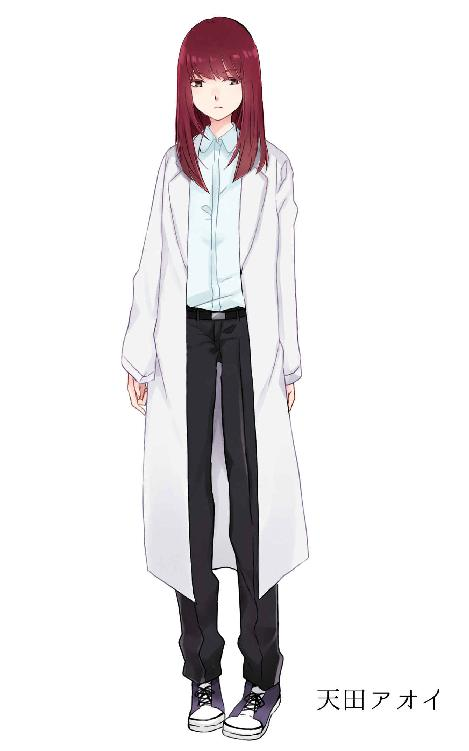

| ドクターアルファのティータイム EP5～笑顔嫌いとカプチーノ～ | |
| 白色黒蛇 | |
| (2018) | |
ドクターアルファのティータイム EP5～笑顔嫌いとカプチーノ～
白色黒蛇
ドクターアルファの独白

アタシの研究施設は随分と山奥にある。しかも地下にある。
アタシが目を覚ました？ 我に返った？ 物心ついた？ どんな表現が正しいかはさておき、そうした時には既にこの研究施設はこの通りの構造でこの通りの場所にあった。
地下３階の構造。どうやら戦時中の研究施設かなんかを改修したものらしい。
全ての部屋を把握して（少し骨は折れるが）１人でこの施設を切り盛りしていっているがたった一部屋、４ケタの暗証番号でロックされた部屋がある。これは誰にも、探偵ちゃんにも言っていないことだ。
「うーん......」
何故か知らないが多少ロボット工学の知識とプログラミングの知識はある。しかし流石にハッキングの術までは知らない。だからこの電子錠は何とか自力で番号を探し当てねばならない。全く難儀してさせられているよ。
「１４２０......」
ブー、と電子錠が不正解を告げる。
「じゃあ......４２０３？」
ブー、また不正解。
「えーっと......じゃあ２２８０？」
ブー、またまた不正解。
「２８０３！」
ブー、不正解。
「あぁもう！ 学籍番号じゃないってかい？」
うぐぅ。この部屋の奥になにかありそうなんだけどねぇ......
「はぁ......こうなりゃハッカーでも復元しようかなぁ」
都合よく元ハッカーの遺体と脳なんて「例の団体」のリストにあるかなぁ？
うーん......難しい。
「なんか他に思い当たる番号とかって無いだろうか......天田アオイにまつわる番号......」
なんかないか、なんかないか、なんか......
「......まさか「０８１５」かな？」
ピピピッ、電子錠が今までとは違う音を鳴らした。
笑顔嫌いとカプチーノ
僕は殺し屋だ。
人を殺すしか能がない。それ以外必要ない。
無感情に引き金を引き、毒物を混入し、首の骨を折る。
仕事はいつも正確に、かつ無感情無感動に行うべきだと僕は教わったし、そうするべきだと僕も思っている、
けれど、どうしても、どうしようもなく僕がカッとなる時がある。それは人の笑顔を見た時だ。
にやにや、げらげら、あはははは。
人の笑顔を見ると、何故か怒りがこみ上げてくる。
心臓の持病とは関係なく胸が締め付けられる。
殺せと言われた奴じゃなくとも、なんなら殺してしまいたいと僕は思ってしまう。
にやにや、げらげら、あはははは。
笑うな、笑うな、笑うな、笑うな！
"スタン"
とある雑居ビルの屋上
引き金を引いた途端、確実に相手を「仕留めた」感触を確かめる。
今日も殺した。依頼をこなした。これで今日も僕は安泰だ。
スコープの先の建物の窓ガラスに映るのはスーツを着た屈強な男たちが殺した奴の傍に駆け寄ってあたふたしている様子。予想通りだ。後はここから立ち去って......
「お父さん！ ありがと！」
雑居ビルの下の方から子供の声が聞こえた。まさか見られたか？ いやいや、そんなことはない。
確認を兼ねて屋上から下の様子を見る。
そこから見えたのは大きな箱を抱きかかえてはしゃぐ女の子。そのすぐ後ろを両親と思われる二人組が笑顔で歩いている。
あはは、ははは。
......不愉快だ。不愉快だ不愉快だ！
こういう時、いつもならムカムカするだけで済んだ。しかし今日は違った。
キュウ、と心臓が締まる。いや、締め付けられる。
苦しい。どうやら心臓の持病の発作のようだ。
僕は堪えきれずその場に倒れ込んだ。
やばいぞ、これはやばい。発作の中でも特に危ない奴だ。
しかも今は仕事中。雑居ビルの屋上。周りには誰もいない。
やばい、苦しい......死んじまう！
......しかしそんな時でも子供とその親の笑い声が耳に入ってきてしまう。
あはは、ははは。きゃっきゃ
ただでさえ発作で苦しい胸がさらに締め付けられる。
......なんだ？ なんなんだよ畜生。
ふざけるな。何がおかしい？ 何が楽しい？
例えそれが僕を嘲るものではないと分かっていながら、それでも僕は最期までその笑みを不愉快に思い続けた。
笑うな、笑うな、笑うな、笑うな！ 僕の前で笑うんじゃねぇよ！
心臓の発作。
意識が途絶える直前まで、僕はひたすら人の笑う様を嫌い、憎み続けた。
一体どれほどの時間が経ったのかは分からないが
僕の意識が戻った。
ここは、どこだ？
白い天井、白い床、白い布団に白い棚......それに綺麗な布団のベッド。ここは病院か？
......確か僕は無事狙撃による暗殺を終えて、帰ろうとしたら心臓発作でもがき苦しみながら意識を手放したはずだ。
今この景色を見る限り、僕はどうやら病院に運ばれたということらしい。僕が病院にいるということは、つまり間一髪僕の依頼者サイドの人間に助けて貰えたようだ。でなければそのまま死んでいるか、もしくは僕が殺した組織の連中に殺されている。
それにしても妙な場所だ。暗殺者でありながら心臓に持病を抱えていた僕は何度も闇医者の元に入院した経験があるけれど、こんなに清潔感のある病室は生まれて初めてだ。裏社会で暗躍する闇医者は誰も彼も変わった奴ばっかりだがどうやらここの闇医者は随分と潔癖症なのかもしれない。
僕の腕には点滴もなく、それ以外の機材に繋がれている訳でもないようなので身体を起こしてみる。うん、異常はない。問題なく動く。
......当然だ。発作さえなければ僕はいつだって動ける。そういう風に訓練したはずなのだ。
そうだ、すぐに毛利の若頭と連絡を取らないと......
キィィと扉が開く音。誰か来たらしい。
ここの闇医者か。それともその関係者か。
いやいや、もしかしたら僕に恨みを持つ誰かかもしれない。僕は少し警戒しながらこの病室に入ってきたであろう誰かがいると思われる方向に最大限の注意を向ける。
「やっ。おっはよう！」
出てきたのは女だった。
「......あ？」
驚いた。と言うより拍子抜けした。こんな女が出てくるとは微塵も思わなかったからだ。
「あ？ じゃないだろう。「おはよう」と言われたら「おはよう」と返す。挨拶の基本じゃないか？」
その女、赤い髪のツインテール、裸眼、色白、細身で高身長。年齢は見たところだいたい２０代後半から３０代くらい。少し派手に見える顔。パッと見かなり目立つ赤いハイヒール。そしてそれらに似合わない、医者のような白衣を着ている。
こいつ、ここの闇医者か？
「ほら、呆けてないで挨拶を返したまえよ。でないと話にならないだろう」
女闇医者は異様に挨拶を要求してくる。全く変わった奴だな。今まで出会った闇医者はどいつもこいつも素っ気ない感じだったがこの女はちょっと、なんていうか、妙に粘着質な雰囲気がある。
「おはよう......ございます」
とりあえず挨拶を返してやった。こういう連中に逆らっても大して利益はないからだ。従っても利益はないけれども。
「ふふん、やればできるじゃないか」
やけに上から目線だな。まぁいい。とりあえず僕の容体はどうか尋ねてみるだけ尋ねてみよう。闇医者だから答えてくれないって可能性もあるけれどまぁ聞くだけで怒るような精神が破綻したような闇医者もいるまい。
「随分と気持ちよさそうに寝ていたものだ。良い夢でも見てたのかい？」
夢？ なんのことやら。
「......僕、心臓発作で倒れたはずですが、もう動いて問題ないくらいには回復していますか？」
餅は餅屋と言うことわざがある。僕自身、もう動いて問題ないとは思うが医療的根拠のない考えだ。ならば、こういう場合は医療の心得がある人の意見を優先すべきであろう。
「おいおい、随分とせっかちだなぁ。ま、とりあえずは大丈夫だよ。今回のアタシの施術は完璧＆完璧だからね。ばっちり復元されているはずさ」
大丈夫。なら大丈夫だな。しかしまったく、心臓の持病とはこれだから面倒だ。とはいえ体と言うものは替えがないからこの発作とも付き合っていかなければ......ん？
この女闇医者、今「復元」って言った......よな？ 言ったはずだ。
「「復元」ってなんです？」
「「生き返った」「蘇った」そんな解釈をしてくれればだいたいあってるさ」
生き返った、か。なるほど......
「は？」
「言っておくけど冗談とかデタラメじゃないからね？」
いやいや、何言ってんだこの闇医者。馬鹿じゃないのか？
生き返った？ それがデタラメならまだしも本当だったらこちらとしては心底「ふざけるな」と言わねばならない。
僕は殺し屋だ。
僕の仕事は「人を殺して、黙らせて、今後一切何もできなくさせること」だ。
それがなんだ？ 復元？ 生き返った？ 冗談じゃない。
そんなことが出来てたまるか。そんな技術があってたまるか。
僕が殺した奴が次々と生き返ってしまうじゃないか。殺すという行為になんの意味も意義も無くなってしまうじゃないか。
この女闇医者の言葉が真実ならばこいつは「殺し屋全員の敵」に他ならない。
「信じがたいと思うがキミは一度死んでいる。それをこのアタシ、ドクターアルファが復元して戻したんだ」
えっへんと胸を張る闇医者。今すぐその貧相な胸、もう少し具体的に言うと心臓部にナイフを突き立ててやりたい。
「こいつ......」
と呟いて少し冷静になる。落ちつけ......落ちつけ......
そうだ。とりあえず少しずつ今この状況を正確に理解する必要がある。それから動いたって遅くはないだろう。
「僕、死んだんでしたっけ。だとすると死因は持病の心臓発作、ですか？」
「その通りだよ」
まぁ、最期の記憶を辿ればこれは容易に分かることだ。
さて、ここで２つの疑問が発生する。
⓵死んだはずの僕は誰の意思によって復元、生き返させられたのか？
⓶僕は何故復元、生き返させられたのか？
僕が殺した組織の連中がもう一度殺すためにこいつに頼んだのか？
それとも僕を雇った組織の連中がもう一度僕に仕事をさせるためにこいつに頼んだのか？
それによっては今後の行動が大きく変わる。この女闇医者を殺すかどうかは別問題として――
「じゃあ、何故僕は復元？ されたんです？ どこかの組に依頼されたんですか？」
雇い主は言えても目的は知らない。と言う可能性もあるがまぁその時はその時だ。さて、闇医者はどう答える？
「いやいや、誰に頼まれたとかじゃないんだ。ちょっと協力してもらいたいことがあるんだよ。手伝ってくれないかい？」
手伝う？ なんだそれ。「人を生き返らせる闇医者」が「人を殺す殺し屋」に「手伝って」だって？ 。
奇妙奇天烈この上ない言葉だが一応聞いておく。
「何をですか？」
「それはね......」
すると闇医者はマグカップを２つ、ひょいと台の上のおぼんから拾い上げ、片方を僕に手渡した。
「これでも飲んでゆっくり話そう。ささ、ティータイムとしゃれこもうじゃないか」
「カプチーノ」と聞くと、大方どんなものかイメージは出来ると思う。
「なんかモコモコしたコーヒー」
そう、それだ。では、もう少しだけ説明をしよう。
カプチーノは、イタリアで好まれているコーヒーの飲み方の１つで、陶器のコーヒーカップに注いだエスプレッソに、クリーム状に泡立てたミルクを加えたものを指す。好みによってチョコレートパウダーで風味付けすることもある。
元来はカトリック教会の一派であるカプチン会の修道士のことを指す言葉で、彼等が着るフードのついた修道服「カップッチョ」にちなむとされる。それ故イタリアでカプチーノはカップッチョとも呼ばれている。更に言うとカプチーノの茶色が修道士の服の色と似ていたから、という説や、エスプレッソに浮かんだミルクの泡を蓋に見立てた（カプチーノには蓋と言う意味もあるそうで）からという説、さらに白い泡をコーヒーが囲む様子が、学校の教科書で見たことがあるだろうかのフランシスコ・ザビエルのような頭頂部のみを剃髪した修道士の髪型に似ているから、なんて説もある。
バリスタがカプチーノの泡の表面にエッチングを行ったり、ココアパウダーを振り掛けたりして描く文様やイラストなどを描く「デザインカプチーノ」なんてものも存在する。 これはよくエスプレッソにミルクを注いでハートやリーフの模様を描く「ラテアート」と一緒にされがちだが別物だ。
「なんて、キミは絵に興味はあるかい？」
「別に」
僕がちびちびとカプチーノを飲む間この闇医者はペラペラとカプチーノにまつわるうんちくを延々口にしていた。
クリームのふわっとした触感の中から少しだけほろ苦いミルクと混じったコーヒーが流れてくる。こんな飲み物は初めてだ。「殺し屋たるもの飲食は手短に素早く」と教わってきた僕からすれば、飲み物で「楽しむ」なんて発想はこれっぽっちも無かった。そっか、こういう余裕のある連中は飲食にも無駄なものを付け足すのか。挙句飲み物に「絵」か......甚だ理解に苦しむ。
「ははは、だろうね。キミは随分仕事熱心だったそうだから、きっとこういう娯楽染みたことは興味がないか」
分かっているじゃないですか。なんだこの闇医者、人が興味ないだろうと分かっていることを延々と語っていたって訳か。酷い性格をしている。
「それで、僕に頼みたいことって、なんです？」
「早速かい？ 本当にせっかちだなぁ」
正直に言うとこの人とはあまり長話をしたくない。殺す殺さないはさておき、この人の口から出る言葉の一つ一つが胸を何故かざわつかせるからだ。過去色んな闇医者の元で診察や治療を受けてその度に言葉を交わしたがこれほど僕を警戒させるような闇医者は初めてだ。怖い？ 怪しい？ 胡散臭い？
どれとも当てはまらない。なんだこいつは、なんなんだこいつは？
「さっきも言ったけど、仕事を手伝ってほしいんだ。ちょっとやること、やらなきゃいけないことが出来てね」
「仕事ってなんです？」
「ちょっとした書類整理、身辺整理......かな？」
なんだそれ。まるで雑用だ。
「そんなことを僕に頼むつもりですか？」
「そんなことって言ってもね。少々癖があると言うか、手こずりそうだっていうか......とにかく一筋縄じゃいかないんだ」
だからってわざわざ殺し屋に頼むか？ 僕とこの闇医者、ハッキリ言って水と油みたいなものだ。お互いがやっている稼業が対立していると言っても良いくらいだろう。
「......僕がどういう人間か知ってます？」
「殺し屋だろう？ だからお願いしたいんだよ」
さも当たり前のように語る闇医者。
全くいちいち癪に障る。なんだろう？ 畜生分からない。分からないから余計にイライラする。
「頼めないかい？ 本当にキミだけが頼りなんだ」
闇医者は掌を合わせて「このとーり」と頭を下げた。
分からない。本当に分からない。この闇医者の考えも、魂胆も何もかも......
推し量ろうかと思ったその時......偶然、一瞬、ちらっと手を合わせて頭を下げた闇医者の口元に目が行った。
笑っているように見えた。口元を釣り上げて、ニヤリと笑っているように見えた......それだけでどうにも、別の感情が沸き上がってくる。
背筋が凍り付く、ゾワゾワと全身に微弱な電流が何往復も何往復も駆け巡るような気がした。
「お前っ......」
堪えろ、堪えろ、堪えろ......
闇医者が顔を上げる。
「もちろんタダでとは言わない。報酬も用意するし今後の生活の保障もする。そこはバッチリ確約するよ」
こいつが何を言ったか、正直頭に入って来なかった。
そう言えば僕は今やっとこいつの顔をまともに見た。その表情はまるで僕を面白がるような、嘲るような、興味深く観察するような、そんな不敵な笑顔だった。さっきまで僕はこいつを半分以上無視していたから気付かなかったが、とどのつまりこいつは今までずっと僕の前で笑っていたわけだ。
こいつは僕の前で笑っていたわけだ。
笑っていやがったって訳だ。
「お前、何笑ってんだよ」
「はい？」
ダメだ。それを見ると僕は堪えられなくなる。
憎悪、憤怒、殺意、あらゆる破壊衝動に繋がりそうな感情がマグマのように湧き上がってくる。冷静に、冷静に、そんな戒めも意味を成さなくなる。
「どうしたんだい？ 急に」
そう尋ねるときでも闇医者は笑っていた。余裕そうにカプチーノを一口飲みながら......
笑うな、笑うな、笑うな、笑うな、笑うな、笑うな、笑うな、笑うな。
「......あぁ、そういえばそうだったっけか」
闇医者はマグカップをおぼんの上に置き、僕の顔をまじまじと見つめてこう言った。
「キミは、笑顔が嫌いなんだったかな？」
瞬間、今まで見てきた、今まで見せつけられてきた多くの笑顔の映像が高速でフラッシュバックされた。どれもこれも不愉快で、今すぐかき消してしまいたくなるものだらけだ。
笑うな、笑うな、笑うな、笑うな、笑うな、笑うな笑うな笑うな！！
「そこまで分かってんなら笑うんじゃねぇよ！！」
堪えることなんかできなかった。
僕は殺し屋だ。
もう一度言う、僕は「殺し屋」だ。
生まれた時から独り身で、気付いた時にはもう人を殺して飯を食うのが当たり前だった。
だから好きなものは無い。いや正しくは「何かを好きになる機会が無かった」と言うべきだ。更に言うと「好きになれるような何かを与えられたことが一度も無かった」のだ。
家族も、友達も、食事も、おもちゃも、ゲームも、お金も、何もかも、何もかも僕に与えられることはなかった。
僕に与えられるのは「殺し」のやり方とその道具、あとは細々と生きていくための最低限度のものと持病の薬だけだ。
気付いた時から殺し屋だった僕は、もう誰かを殺すことでしか自分を生かせないような人間だった。そんな人間に感情はいらない。そう言い聞かせてあらゆる感情を捨ててきた。喜びも、悲しみも......
「生きていくって、そんなもんだ」
そう思って生きてきた。殺して、殺して殺して、おびただしい数の命を奪いながら生きてきた。
けれどそんなもんなのは僕一人なのだと、時々思い知らされた。
アハハハハ、アハハハハ。
何がおかしくて笑っているのか、何が楽しくて笑っているのか分からない。けれどその笑い声を聞くと、その笑い顔を見ると、僕はとても惨めに思えたんだ。僕は全てを捨てて生きてきた。そうじゃないと生きていけなかった。そんな僕からすれば笑う奴が皆
「お前の生き方はつまらなそうだな」
と僕を見下し、嘲笑っているように見えた。
もしくは
「お前は持ってないだろうけれど僕はこんなに良いものを持っているんだぜ」と見せつけて自慢しているように見えた。
だから僕は笑顔が、笑いが大嫌いだった。
事実僕の生き方は面白いわけじゃないし、僕は何も持っていない。けれど、それをいちいち態度で示して来られると無性に腹が立って仕方がない。
でも仕方ないだろう？ それ以外に生きていく方法が無かったんだから、こうなる以外どうしようもなかったんだから。僕が愚かだろうが賢かろうがこれ以外の選択肢を選べば野垂れ死んでいたんだから。
そんな僕に笑う余裕なんてどこにも無かったんだから！
街に出れば皆が笑っていた。依頼主のヤクザの元に戻るとニタリニタリと良からぬ企みに笑顔になっている汚い奴らがいた。
笑うな、笑うな、笑うな、笑うな。
例えそれが僕以外の何かを笑っているものだと理性が理解していても、どうしてもどこかでその笑いが、笑顔が、僕を愚かだと罵るものにしか見えなかった。僕に自分の優位を見せつけているようにしか見えなかった。
僕に笑う余裕なんかない。僕は笑うことなんかできない。
笑うことの出来ない僕を見下しているように見えるありとあらゆる全ての笑顔が、僕は大嫌いだった。
気が付けば僕は闇医者の首を絞めていた。
どんなに冷静さを欠いていてもそれは身体が覚えている。徒手空拳で人を殺す動き、身体裁き、全ていつも通り確実に殺す動きが出来た。しかしまだこの闇医者は生きていて、首を絞める僕の手首を掴んで引き離そうとしている。
しかしあともう少し、ほんの少し力を籠めればきっと――
「ははは、随分と、手荒い真似を、するじゃないか......」
まだ喋る余裕があるのか......へぇ、これは初めて見る反応だなぁ。
「そんなに、キミの逆鱗に触れるとは、思わなかったよ......いきなり飛び掛かって首を絞めるだなんてね、そんなに怒るようなことかい？ こんな風に笑うってのは......ははっ」
そう言って再び僕の顔を見て笑みを浮かべた。
......なんだ？ なんなんだ？ なんなんだこいつは！？
殺されそうになっているんだぞ？ その理由だって分かっているはずだ。なのになんで、なんで僕の怒りを買うと分かってまだ笑うんだ！？
「......そんなに死にたいんですか？」
質問を投げると
「そんなに笑顔が憎いのかい？」
と質問が返ってきた。
「質問に答えてください」
「そっちこそ、先に答えるべきだ。なんせアタシが先に聞いたんだから」
そんなどっちが先かなんて本当はどうでもいいことだろ......
まぁいい、冥土の土産に教えてやるよ。
「あぁそうですよ。笑顔なんて大っ嫌いです。何が楽しいのか、何が面白いのか知りませんがね、とにかく笑ってる奴を見ると虫唾が走ります」
「......勘違いみーっけ」
「......あ！？」
闇医者は自身の首を絞める僕の手首から右手を離し、その手でちょうど僕の鼻先にピタリと触れるように指差した。
「キミは、笑うってことに対して一個重大な勘違いをしている」
「勘違い？」
「多分それを教えてくれる人がいなかったからだろう。そうだね。これを聞いて納得できなかったらアタシを絞め殺すと良い。抵抗はしない」
そう言うと闇医者はとうとう首を絞める僕の手首から左手も離し、両手を大の字になるように横に広げた。無抵抗、その意思を行動で表しているように――
こいつ、正気か？ 抵抗しなければ間違いなく死ぬんだぞ？ 命が惜しくないのか？ それとも何か別の目的が――僕は、こいつをこのまま殺していいのか？ 今思えばこの闇医者、いつ僕に殺されてもおかしくなかったってことが分からない訳では無かったはずだ。なのに無警戒、不用心過ぎやしなかったか？ まるで僕がこうして殺しにかかるのを待っていたみたいに......
「......話してみてくださいよ」
このまま殺すという選択肢もある。しかし今、体勢的には僕が優位である上に、今すぐ殺さなければならないといった緊急性もない。こいつに最期に喋らせるくらいのゆとりはあると思ったのだ。
「キミは言ったね、『楽しいのか、何が面白いのか知りませんがね』って。そこが違うんだよ。人はね、必ずしも楽しいから、面白いから笑うんじゃない。逆に、辛い時や悲しい時、苦しい時だって笑う時は笑うんだ」
辛い時や悲しい時や苦しい時に笑う？
「ふざけるな。そんな訳が――」
「現に今アタシがそうさ、プロの殺し屋に殺されかけて苦しい。けれどアタシは笑っているだろう？」
再びニィ、と口元を釣り上げる闇医者。確かにそうだ。そうだが......
「じゃあなんで今あなたは笑っているんですか？」
「無理にでも笑ってないと、壊れちゃいそうだからね」
『無理にでも笑ってないと、壊れてしまいそうだよ！』
「壊れる？ ......何がですか？」
「......『心』かな？ あるいは『自分自身』か......どう言えばいいか迷うけど、とにかく笑わないと自分が人であると思える何かが崩れ去ってしまいそうなんだ。まるで機械にでもなってしまいそうな感じがするんだよ、人間なのに」
「機械......」
その言葉を聞いた時、僕の中の何かがえぐり取られたような気分になった。
「機械」「機械のような人間」それは「僕自身を指している言葉」のように思えた。
「だから笑うんだ。辛い時でも悲しい時苦しい時でもね。もちろん楽しい時も、面白い時だって笑う。笑顔になる。そうやって少しでも自分の今がマシだと思うために。自分は機械じゃないって、思い知るために人は笑うんだよ」
殺せと言われれば殺す。そんな単純作業、ルーチンワークを繰り返す機械。
そうだ。僕は機械になっている。僕は機械になっていた。
「機械みたいに、ただそこにいるだけの存在のように、ただ呼吸をするだけの人形になりたくないから笑うんだ。そんな風になってしまいそうだけどそんな風になってしまうかもしれないと思うのだけれどそうなるのが嫌だから、その抵抗としてアタシは笑うんだ。だから笑うんだ」
「じゃあ、つまり、そうなってしまった僕を見下してるって訳ですか？」
「違うよ。むしろ逆だ。「こっちにおいで」って言ってるんだよ。キミは知らないだろうけど笑顔は伝染するんだよ。誰かが笑顔になれば別の誰かもつられて笑顔になるんだ。キミが見た笑顔の中には、キミにも笑って欲しくて振りまかれたものもあったんじゃないかって、アタシは思うよ。だから......」
そう言うと闇医者は広げていた両手で僕の両肩を掴んだ。
ヤバい、話を聞いていて反応が遅れた。これは罠だったか......
しかし、予想外にも闇医者は両肩を掴んだその両手をグイッと自分の方へ引き寄せた。結果、闇医者の上に覆いかぶさるようにして倒れた僕を闇医者が抱きしめる形になった。
「キミも笑ってごらんよ」
肘が曲がって掌に力を入れにくくなった。これじゃこいつの首を絞めにくい。畜生、これが狙いか。どうにか振りほどいて元の態勢に......
ドクン
あがこうとした僕の耳に一つの音が入ってくる。闇医者の声でもなければどちらかが動いた音でもない。これは何の音だ？ 考えられるとすれば......心臓の音か？ 闇医者の心臓の音か。
心臓の音、僕が今まで止めてきた音......
ドクン
まただ、またこの音。
ドクン、ドクン、ドクン
一定のリズムを刻んでその音は鳴る。鳴り続ける......
心臓の音、人間の音、命の音......それはそいつが人である証の音。
機械のような人である僕も、絶えず鳴らしていたはずの音。
僕は笑うことをやめた機械のような人間だ。機械と区別のつかないような人を殺すだけの存在だ。でも、そんな僕もこの音を鳴らしていると思うと......
「僕は、どっちです？」
人間？ 機械？
「それを決めるのはキミだよ」
"はは、ははははは"こう笑えばいいのか？ こうすれば人間になるのか？ 僕はこれで、人殺しの機械から人間になれるのか？
はは、あはははは......
「けど実際、キミが笑顔を憎んでいたのはとどのつまり「機械のようなキミが人間らしい他の人に対して抱いていた憧れ」なんだろう？ そうなりたかったけどそうなれなかったから、嫉妬していたんだろう？」
僕は人間になりたかった？ 殺しの機械から人間に？
だからこそ憎んだのか。僕が本当になりたかったものたちを憎み続けたのか？
僕がそうなれなかったから、そうなれている奴らが羨ましくって......
そう思うとなんだか、馬鹿馬鹿しいような、くだらないような、今までの僕の人生が茶番か何かに思えたような気がした。
「はは、はははは......」
ふと、無意識で出たそれは棒読みの笑いだった。闇医者に比べるとヘタクソでぎこちなさすぎるものだったけれど、ほとんど無意識で出たその笑いは「人になりたい」と言う僕の素直な気持ちなのだろうか？
まるでカプチーノだ。ほろ苦くて少し甘いミルク入りコーヒーをクリームの泡が隠していたように、殺し屋と言うあり方が僕の素直な気持ち、笑顔への憧れを隠していた。
闇医者を殺そうとしていたが、すっかり気分が覚めてしまった。
闇医者の首を絞めていた手を離してベッドに腰かける。そこで一言謝ろうかとも思ったけれど、そうすると、それはそれで闇医者の笑いものにされそうな気がしてちょっと気が引けたので、やめた。
笑うことは良いけれど、笑われるのは、やっぱりいい気分じゃない。
「それはそうと、結局僕に頼みたいことってなんですか？」
話をすり替える。そういえばこっちがなし崩しになっていたからどの道ハッキリさせなければならないし。
「笑顔だけじゃなくってごまかしもヘタクソだね」
「うるさい。良いから答えて下さいよ」
「分かった分かった、けれどその前に最後にどうしても聞きたいことがあるんだよね」
「......なんですか？」
「女性の殺し屋って、相手の男性の心を開かせてから殺すこともあるって聞いて真似してみたんだ。どう？ 上手かった？」
天田アオイの手記

帰国してすぐに人気のない山奥の元研究施設を買い取った。
アメリカの国家機関に目をつけられた以上人前に顔を出すのはリスクが高い。出来るだけ見つからない場所に潜伏し、その上で研究を続けるためにはどうすればいいかと考えた結果ここに行き付いた。
かなり無茶苦茶な策だとは思ったが、この研究施設は人里離れた場所にある上にそんなに大きいものではなかったからかそこまで高くなかったし、留学費用もなんだかんだ半年しかいなかったため結構余っていた。それを突っ込んでみたら購入するだけならなんとかなってしまったのだ。そう、買うだけならどうとでもなってしまったのだ。とはいえ結局維持費がかかるからそこは後々考えねばならない。
そうだな。維持費は裏社会の人とコンタクトを取って、不本意だがそこから金を貰って生体復元することでどうにかしよう。金儲けに使いたくはないし超絶不本意だが、研究完成のためには致し方ない。
それを研究施設や研究機材の調達に充てればいずれ今までの大学での研究施設と大差ないレベルまでにはできるか......
なんて思っていた時だった。
乳がん、ステージ４
体調が悪いと思い、一番近くの病院で検査を受けたら見つかった。
なんだそれ？
生体復元の研究の完成と理想的な運用のため努力を重ねて、留学をして、これから自分で思う通りにやっていこうと思った矢先にこの始末。
「無理にでも笑ってないと、壊れてしまいそうだよ」
電子書籍作成にあたって
電書ちゃんの「でんでんコンバータ―」を使用させて頂きました。
注意事項
◆作品データについて
落丁、乱丁などありましたら先述の問い合わせ先までご連絡ください。取り急ぎ修正させて頂きます。また修正を行った際、ご購入頂いた書籍データが予告なく最新の版に入れ替わる事が御座います。御了承下さい。
本作品のすべてまたは一部を無断で複製・転載・配信・送信を行う事、第三者への譲渡、内容の無断改変は著作権法上のて例外を除き禁じられています。